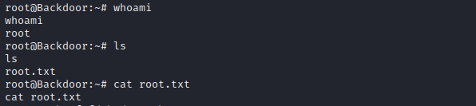

Home
HTB - BACKDOOR
More Info to come----------------------------------------------------------
Scanning and Enumeration
Let's perform an NMAP scan...$ nmap --min-rate=1000 -T4 -p- -sV 10.10.11.125
Starting Nmap 7.92 ( https://nmap.org ) at 2021-12-30 00:56 WAT
Warning: 10.10.11.125 giving up on port because retransmission cap hit (6).
Nmap scan report for 10.10.11.125
Host is up (0.18s latency).
Not shown: 65532 closed tcp ports (reset)
PORT STATE SERVICE VERSION
22/tcp open ssh OpenSSH 8.2p1 Ubuntu 4ubuntu0.3 (Ubuntu Linux; protocol 2.0)
80/tcp open http Apache httpd 2.4.41 ((Ubuntu))
1337/tcp open waste?
Service Info: OS: Linux; CPE: cpe:/o:linux:linux_kernel
Service detection performed. Please report any incorrect results at https://nmap.org/submit/ .
Nmap done: 1 IP address (1 host up) scanned in 134.99 secondsApache httpd 2.4.41 - TCP 80
At first glance, at the bottom of the page we can see that the site is a Word-press managed application. We have the file-directory sturcture of a typical Word-press application to be... [dir] wp-admin
[dir] wp-includes
[dir] wp-content
index.php
license.txt
readme.html
wp-activate.php
wp-blog-header.php
wp-comments-post.php
wp-config-sample.php
wp-cron.php
wp-links-opml.php
wp-load.php
wp-login.php
wp-mail.php
wp-settings.php
wp-signup.php
wp-trackback.php
xmlrpc.phphttp://backdoor.htb/wp-links-opml.php to get the Word-press version...
We have WordPress/5.8.1 running on the web server. Looking through the internet there seems to be no critical exploitable vuluerability for this Word-press version.The wp-content dir is known to contain website themes, plugin files and media uploads. Taking a look at
http://backdoor.htb/wp-content/plugins/ we have...
We have an ebook-download plugin on the application which is used to download files from the web application. The contents of the plugin are...
In the "readme.txt" file, the ebook version is identified to be version 1.1 and this version of ebook-download plugin is vulnerable to Directory Traversal.Directory traversal is a web security vulnerability that allows an attacker to read or even write to arbitrary files on the server that is running an application. It exploits insufficient security validation or sanitization of user-supplied file names.
PoC for this vulnerability is...
/wp-content/plugins/ebook-download/filedownload.php?ebookdownloadurl=[file_path]Ebook-download Plugin Exploitation
Now, that we know how to exploit the ebook plugin, our focus should be on how we can get more suitable information that would enable us to exploit the attack surfaces we already have access to. Remember from our scan, we have access to an ssh service, web service, and an unidentified service running on port 1337.First, let's work on the ssh serivce. Let's see if we can download the
id_rsa private key file of a user. But first we need to identify a valid user. Let's download the passwd file first. Use the url...
/wp-content/plugins/ebook-download/filedownload.php?ebookdownloadurl=/etc/passwduser on the machine. Now let's download the user's ssh private_key using the /wp-content/plugins/ebook-download/filedownload.php?ebookdownloadurl=/home/user/.ssh/id_rsaNext let's see if we can identify the service running on port 1337. Using the same PoC let's get the
/proc/net/sched_debug file. This file shows us running processes on a machine. After analyzing it's content, there is an interesting process...
Let's get the file /proc/net/68218/cmdline. This file can be used to identify the port that the process "68218" is running on...
Great we, know that the port running on the process is 1337, which is a gdbserver. Now let's hit the streets (Google) and see what we can find...LOL
We have a gdb python exploit with the following usage...
Set the necessary options and run the exploit. Make sure you have your listener listening...
 Boom...We got a shell boii, get that flag 😁
Boom...We got a shell boii, get that flag 😁Type
$ /usr/bin/script -qc /bin/bash /dev/null to spawn a proper tty shell.Privilege Escalation
The first thing to check for privilege escalation is the files that contain SUID bit. we have... It appears the "screen" utility has this bit set. The "screen" utility is a tool that connects a single physical terminal between several shell processes. So bascially you can have separate shell instances running on the same physical terminal.To get a root shell run the following commands...  SUCCESS, we now have a root shell and can view the root FLAG.
Thank you for reading my writeup 😀 | Home